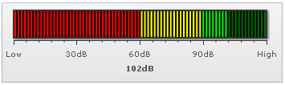

LED Gauge > Creating a simple gauge |
LED Charts are like the ones used to display CPU Usage. The values are displayed in an LED chart by filling up the LED box to that particular level, horizontally in the horizontal LED and vertically in the vertical LED chart. In this sample that we are going to build, we would be using and referring to the horizontal LED throughout. Now as a first chart, we would be building a sound meter to show the sound produced by a particular equipment on a scale on 0-120dB. The final result would look something as under: |
|  |
The various tasks involved in building this chart are:
Tasks defined, now lets get to the XML side of things. |
| XML for the chart |
| The XML for this chart can be listed as under: |
| <chart lowerLimit='0' upperLimit='120' lowerLimitDisplay='Low' upperLimitDisplay='High' palette='1' numberSuffix='dB' chartRightMargin='20' > <colorRange> <color minValue='0' maxValue='60' code='FF0000' /> <color minValue='60' maxValue='90' code='FFFF00' /> <color minValue='90' maxValue='120' code='00FF00' /> </colorRange> <value>102</value> </chart> |
| Explanation |
First of all comes the <chart> element which is the starting element for any chart that you create using FusionWidgets. Now we define the lower and upper limits of the gauge scale. To define the limits, we use the lowerLimit and upperLimit attributes of the <chart> element. We've asked the chart to show lower limit text as Bad and upper limit text as Good. We also set the palette number and number suffix as dB (the character which would show up at the end of end number). |
| <chart lowerLimit='0' upperLimit='120' lowerLimitDisplay='Low' upperLimitDisplay='High' palette='1' numberSuffix='dB' chartRightMargin='20' > |
There are other attributes of the <chart> element which we would not be delving into now, because of this being a really basic chart. Next, we need to define our color range. As we had earlier seen, this chart has 3 color ranges. To define the color range, we use the <colorRange> element, which is an immediate child of the <chart> element. Under each <colorRange> element, we place a <color> element specifying a single color range as shown in the code below. |
| <colorRange> <color minValue='0' maxValue='60' code='FF0000' /> <color minValue='60' maxValue='90' code='FFFF00' /> <color minValue='90' maxValue='120' code='00FF00' /> </colorRange> |
| Now that we've the color ranges in place, we need to set the value for the chart. We do so using: |
| <value>102</value> |
And with this, you've created your first LED gauge. Next, we'll see how to customize the various facets of this chart. |